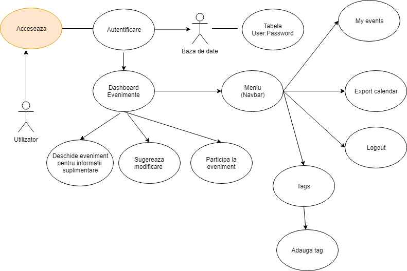

Autonomus este o aplicatie de tip web care agrega evenimente pe care le clasifica dupa anumite taguri. Aplicatia isi propune sa simplifice procesul prin care utilizatorul poate descoperi diferite evenimente care se intampla pe subiectele lui de interes.
In cadrul aplicatiei noastre, ne propunem sa oferim utilizatorului sansa de a vizualiza
evenimente care corespund subiectelor lui de interes, pe care le poate selecta, sa vizuallizeze
diverse detalii si chiar trimite sugestii de modificari in cazul unor anumitor erori in cadrul
evenimentelor originale agregate. De asemenea, ei pot aprecia anumite evenimente si le pot
ulterior exporta in format iCalendar pentru importul intr-o alta aplicatie de management
a agendei zilnice. Acesta va fi si notificat prin SMS la aparitia unor evenimente noi, dar
va fi tinut la curent si cu ajutor unor newslettere.

Din perspectiva administratorului, el poate adauga diverse pagini de profil, precum
cele de pe Meetup, Eventbrite, Fb, care vor fi urmarite si din care se vor extrage
evenimente. De asemenea, el are dreptul de a aproba sau respinge cererile de modificare
transmise de utilizatori.
Pentru a realiza acest proiect, am realizat in prima faza diagramele de use-case si am stabilit documentatia pentru un API Rest care sa fie ulterior consumat in client. Am realizat un workflow minimal prin care sa extindem cu usurinta APIul cu functionalitati noi, folosind Python si Google Cloud. In partea de frontend, am realizat apelurile AJAX folosind JavaScript. Pentru a extrage evenimentele urmarind tagurile adauge, am utilizat API-urile expuse de Meetup, Eventbrite si Facebook si am extras inteligent tagurile pentru evenimente din descrierea acestora. Pentru a putea trimite SMS-uri si newslettere, am utilizat serviciile SendGrid prin API-ul pe care il pun la dispozitie.
In acest moment, oferim utilizatorilor o platforma unde evenimentele sunt mult mai usor de descoperit, agregate dintr-un numar mare si interesant de surse si promitem sa il tinem la curent cu toate noutatile. Ne dorim sa continuam dezvoltarea proiectului, integrand si o forma de localizare si de traducere a locatiilor date prin API-ul de la Google Maps pentru a putea pe viitor oferi si evenimetne doar din proximitatea utilizatorului sau dintr-o zona selectata.